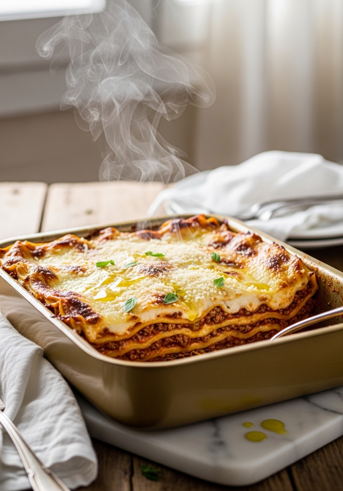
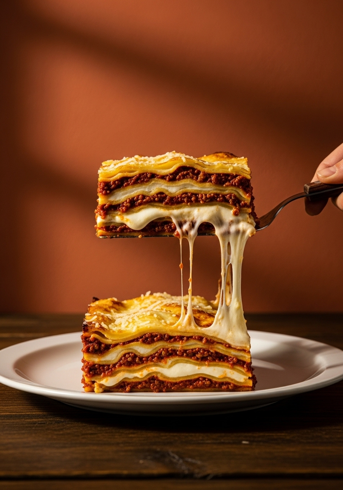

Le lasagne al forno alla bolognese sono forse il piatto più rappresentativo della cucina italiana nel mondo. Eppure spesso vengono preparate male: ragù troppo veloce, besciamella grumosa, sfoglie secche che rimangono dure. La ricetta autentica registrata dall'Accademia Italiana della Cucina prevede un ragù di carne misto cotto per almeno 2 ore, una besciamella vellutata preparata con il roux classico, sfoglie di pasta all'uovo e abbondante Parmigiano Reggiano DOP a ogni strato. Il risultato è un primo piatto sontuoso, ricco, profumato — la domenica italiana per eccellenza.

DomenicaLa ricetta autentica delle lasagne alla bolognese è stata depositata ufficialmente nel 1982 dall'Accademia Italiana della Cucina presso la Camera di Commercio di Bologna. La ricetta originale prevede sfoglie di pasta all'uovo verde (con spinaci) e un ragù che non include il pomodoro pelato — solo concentrato — contrariamente a molte versioni popolari. Il latte intero nel ragù è la firma del ragù bolognese autentico, che lo distingue da tutti gli altri ragù italiani. A Bologna, le lasagne sono il piatto della domenica per eccellenza: ogni famiglia ha la propria versione, tramandata di nonna in nonna, con piccole variazioni che ne fanno un patrimonio familiare irripetibile.
Nel Sud Italia (Campania, Sicilia) le lasagne si preparano tradizionalmente con mozzarella, uova sode, ricotta e salame — niente besciamella. Al Nord (Emilia-Romagna, Lombardia, Piemonte) la besciamella è obbligatoria. Nessuna delle due è sbagliata: sono due tradizioni regionali diverse e ugualmente autentiche. La versione bolognese con besciamella è quella più conosciuta nel mondo e quella registrata ufficialmente dall'Accademia. La besciamella crea una cremosità avvolgente che si amalgama con il ragù in modo irripetibile — un abbraccio caldo in ogni forchettata.
Ingredienti
Procedimento

Le lasagne al forno si conservano in frigorifero per 3-4 giorni coperte con pellicola. Il sapore migliora il giorno dopo — è uno dei rari piatti che il giorno dopo è ancora più buono: gli strati si compattano, i sapori si amalgamano e le lasagne si tagliano perfettamente. Per congelare: porziona le lasagne fredde, avvolgi ogni porzione in carta stagnola e conserva in freezer fino a 3 mesi. Per riscaldare dal congelato: in forno a 160°C coperto per 30 minuti, poi scoperto per 10 minuti. Le lasagne avanzate sono perfette anche scaldate in padella con un filo d'acqua e coperte con un coperchio.
Sì — le lasagne secche precotte funzionano bene. Non richiedono precottura: l'umidità della besciamella e del ragù le cuoce durante la cottura in forno. Usa una besciamella leggermente più liquida del normale per garantire che le sfoglie si cuociano bene. Le lasagne fresche danno un risultato più delicato e setoso — se hai tempo, preparale in casa.
Almeno 5-6 strati. Sotto i 5 strati le lasagne sono troppo sottili e si seccano. 6-8 strati è il range ideale per una teglia da 30x20cm. L'importante è che ogni strato sia uniforme e che l'ultimo strato sia generosamente coperto di besciamella per creare la crosticina gratinata che è la firma delle lasagne al forno perfette.
Tecnicamente sì, ma il risultato sarà molto diverso. Sotto le 2 ore il ragù è ancora granulare e asciutto. Dopo 2 ore il collagene della carne si scioglie e il ragù diventa cremoso e avvolgente. Se hai fretta, usa una pentola a pressione: 45 minuti a pressione equivalgono a circa 2 ore di cottura tradizionale.
Assolutamente sì — è anzi consigliato. Assembla le lasagne il giorno prima, copri con pellicola e conserva in frigorifero. Inforna direttamente dal freddo: aggiungi 10-15 minuti al tempo di cottura. Il sapore sarà ancora migliore: gli strati si compattano e i sapori si amalgamano durante la notte.
I grumi si formano quando si aggiunge il latte troppo velocemente o troppo freddo. Aggiungilo sempre caldo e poco alla volta, mescolando continuamente con una frusta. Se si formano dei grumi, non preoccuparti: passa la besciamella al minipimer per 30 secondi e tornerà liscia e vellutata.